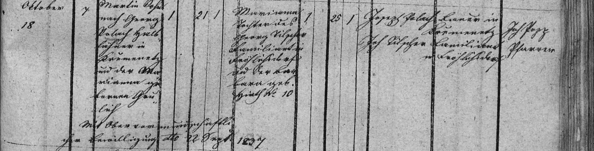

Zápisy z matrik · sňatek
Sňatek Martina Poláka a Marianny Tilšerové
Martin Polák (21 l.), syn zemřelého Jiřího Poláka, pololáníka v Křemenci, a Marianny roz. Paulíkové, Křemenec čp. 7 × Marianna (25 l.), dcera Jiřího Tilšera, familianta ve Veselé, a Barbory roz. Hirthové (?), Veselá čp. 10. Svědci Josef Polák, sedlák v Křemenci, a Josef Tilšer, familiant ve Veselé. Ženich nezletilý – svolení vrchního poručenského úřadu z 22. 9. 1837.
| Datum | 18. 10. 1837 |
|---|---|
| Archiv | Moravský zemský archiv v Brně – Sbírka matrik (E 67), fara Konice |
| Svazek | O Konice 1817–1838, kniha č. 9101 (oddíly po obcích) |
| Snímek | 125 – otevřít na portálu Acta Publica |
| Týká se | Martin Polák* 1816, Marianna Tilšerová* ≈1812, Jiří Polák1786–před 1837, Marianna Paulíková* ≈1790, Jiří Tilšer, Barbora Hirthová (?) |

Červeně je označené místo, ze kterého čteme. Kliknutím otevřete výřez v plném rozlišení.
Přepis originálu
Martin Polák (21 l.), syn zemřelého Jiřího Poláka, pololáníka v Křemenci, a Marianny roz. Paulíkové, Křemenec čp. 7 × Marianna (25 l.), dcera Jiřího Tilšera, familianta ve Veselé, a Barbory roz. Hirthové (?), Veselá čp. 10. Svědci Josef Polák, sedlák v Křemenci, a Josef Tilšer, familiant ve Veselé. Ženich nezletilý – svolení vrchního poručenského úřadu z 22. 9. 1837.
Překlad
Martin Polák (21 l.), syn zemřelého Jiřího Poláka, pololáníka v Křemenci, a Marianny roz. Paulíkové, Křemenec čp. 7 × Marianna (25 l.), dcera Jiřího Tilšera, familianta ve Veselé, a Barbory roz. Hirthové (?), Veselá čp. 10. Svědci Josef Polák, sedlák v Křemenci, a Josef Tilšer, familiant ve Veselé. Ženich nezletilý – svolení vrchního poručenského úřadu z 22. 9. 1837.
Nejistá čtení jsou označená (?), nečitelná místa […]. Přepis si můžete ověřit na výřezu výše.